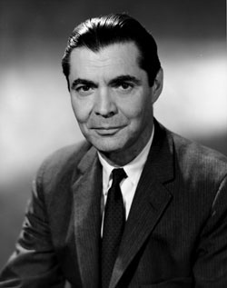

Viata personala
S-a născut în data de 19 noiembrie 1912, la Iași în 1912, într-o familie de profesori,
tatăl fiind profesor de filozofie, iar mama profesoară de liceu.
La vârsta de 7 ani, el și-a început pregătirea școlară la Școala „Mihail Kogălniceanu” din Iași,
unde a învățat timp de trei ani. În 1930 s-a înmatriculat ca student la Facultatea de Medicină a Universității din București.
A absolvit-o în 1940, obținând titlul de doctor în medicină cu o teză asupra unor probleme de structuri histologice.
